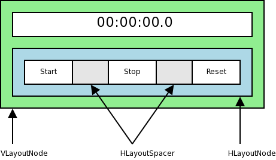

Introduction
Syllable OS Development Introduction
Welcome to Syllable! We're glad you want to help out.
First of all, you'll need some basic development tools. You have two options:
- Download the Developer Pack, which contains all of the most common packages you'll need, though they may not always be the most up-to-date versions. OR
- Download the individual packages you want from the Syllable website. At a minimum these should be:
- Gcc 3.3 or newer
- Binutils 2.14 or newer
- The latest version of make
Read the README included in the Developer Pack for installation instructions. Note that, if you're downloading the Developer Pack 4 for 0.6.0, get a copy of libgcc_s.so.1 and put it in /system/lib/. It'll be on the install CD, or in 0.5.7.
Those are the minimum you would need to build C or C++ software, but if you also want to build the kernel or deal with third party source code, the following packages may also be required:
- nasm
- Autoconf
- Perl
- Diffutils
- Ruby (needed to install Builder)
You should probably download the latest CVS package in order to access the Syllable CVS repository, including Builder.
Retrieve Builder from CVS:
cvs -d:pserver:anonymous@cvs.sourceforge.net:/cvsroot/syllable co syllable/system/apps/utils/Builder
Retrieve from CVS two files which are used by some of the system Makefiles:
cvs -d:pserver:anonymous@cvs.sourceforge.net:/cvsroot/syllable co syllable/system/makefile.rules cvs -d:pserver:anonymous@cvs.sourceforge.net:/cvsroot/syllable co syllable/system/recurse.rules
These two files should go in /usr/src Also modify /etc/profile and set the ATHEOS_SRC environment variable to point to /usr/src. Directly below this, add:
export ATHEOS_INCLUDE_PATH=/ainc
Close and re-open your terminal window for these changes to take effect.
Some code may require extra libraries. For example, libogg, libpng, etc. are required by some parts of Syllable. You would need to download and install these as needed.
Syllable API Intro
The Syllable API (Application Programming Interface) is a set of classes that Kurt wrote so that developers can use standard GUI widgets like windows, alert boxes, buttons, and so forth in their own Syllable programs.
OK, so Syllable has got a whole bunch of classes, each one corresponding to an individual GUI widget. There's Window, which creates a window, CheckBox, which displays a check box and a label, Button,
which displays a pushbutton, and so forth. All of these classes are
declared in .h files that reside in subdirectories within the /boot/syllable/sys/include/ directory. Thus, there's a window.h file, a checkbox.h file, a button.h file, etc. Thus, to use any of these classes, all that a developer need do is #include the appropriate .h file.
So if, for example, I wanted my Syllable program to have a window, a push button, and a list view, I'd have something like this at the beginning of my program:
2 #include <gui/button.h>
3 #include <gui/listview.h>
However, there has to be some way for programmers to control the behavior of their widgets; when the user clicks on a button, the programmer needs to be able to specify what happens next. There are a couple of ways to do this.
The API comes with a handy system for sending Messages when certain events occur. Here's how it works:
When you define a Button, you can specify a Message that that Button
will send whenever the Button is clicked. That Message will, by
default, be sent to the Window that contains the Button, though the
destination can be changed. When the Window receives any Message, its HandleMessage() function is called, and you can override that function to respond to the particular Message you set up.
Let's see an example:
2 const unsigned int RESET_BUTTON_PRESSED_MESSAGE = 1;
3
4 MyView :: MyView( ... )
5 {
6 Button *resetButton;
7 Message *message;
8 Rect r;
9 /* Create a new Message, for the Button */
10 message = new Message( RESET_BUTTON_PRESSED_MESSAGE );
11 /* Create the Reset Button, telling it to send _message_ when it is clicked. */
12 resetButton = new Button( r, "resetButton", "Reset", message );
13 }
14
15
16
17 MyWindow :: HandleMessage( Message &pcMessage )
18 {
19 switch( pcMessage->GetCode() )
20 {
21 case RESET_BUTTON_PRESSED_MESSAGE:
22 /* Do whatever when the Reset Button is clicked */
23 break;
24 default:
25 Window :: HandleMessage( pcMessage );
26 }
27 }
If the messaging system is inadequate for a particular type of
funcionality, the programmer can derive his or her own classes from the
classes provided in the .h files. He or she then implements (or
overrides) whatever functions are provided for that class, to control
the widget. If our programmer wanted to have a button which does
something once the user has clicked on it, s/he would create a class
called, for example, MyButton which derives from Button, then override
the Invoke() function, and write the code to do whatever needs to be done when the button is activated.
OK, perhaps that's sort of unclear. Let's see a simple example:
2
3 class MyButton : public Button
4 {
5 MyButton( void );
6 status_t Invoke(Message *a_pcMessage);
7 }
So we've just created our own version of the Button, but we'll be able to write our own Invoke() function to do whatever we want:
2 {
3 /* Do something interesting here. */
4 }
That Invoke() function will be called by Syllable whenever a user clicks on our button.
The only way to create GUI applications for Syllable is to download the port of gcc (the GNU C++ compiler) and compile applications using Makefiles and/or the command line. There are no GUI IDEs for Syllable yet.
If you want to learn more about command-line compilation, see a Unix book (such as the excellent Unix in a Nutshell from O'Reilly) for more information.
That's about it. If you're unclear on any of this, or just want to get into the specifics of coding, go to A Dissection of Hello World.
Please use *correct* HTML - namely where your #include lines are. Use $lt; and > entities instead of < and >, respectively.
This article is rather old. Now there is at least sIDE, as IDE for syllable. It support code coloring, and project settings (freeing developers from writing makefiles)
yes, it's old, but somebody with programming knowledge would have to update it, and the developers are busy developing.
Basic Programming
OK, today we're going to write a ridiculously simple program, one which will print the sentence Hello, world!
on the screen. It won't teach you the Syllable API, and it won't even
teach you much of C++; it will teach you the basics of how programming
works.
We'll start off by creating a directory to store our developmental programs in. Open up your home directory in a terminal window, and type the following:
$ cd development
OK, it's time to write our first program. Using a text editor, create a simple plain-text file. No formatting. Add the following to the file:
2 int main( void )
3 {
4 std::cout << "Hello, world!" << std::endl;
5 return 0;
6 }
That's a complete C++ program. Let's go through it line-by-line. Don't worry if you don't understand everything here; again, the point of this tutorial is more to get you used to the programming process, rather than teach you all the particulars of how this particular program works.
The C++ programming specification actually defines only the very
basic layout of the language. In order to actually do useful things
with C++, you need to add special files called libraries to
your program. A library is just a file which defines special commands.
Thus, the first line of our program uses the special #include command to pull in a particular library file, namely, iostream. iostream contains commands for input and output streams; thus the name of the file.
Then, every program needs a block of code named main. The program always starts executing here, no matter where the main block is located in the program. The int
word says that this block will end up with a number value when it's
done processing – don't worry about exactly why we're bothering with
this right now.
(Actually, the proper term for these blocks is a "function," but we won't worry about that right now either.)
OK, then we use a special command that's part of the iostream library; namely, the cout command. cout is used to print things on the screen. We then use the <<
operator (a kind of command), to say that we're not done cout'ing yet,
then we have the special string that we want to print out. This string
must be surrounded with double-quote marks; otherwise, the C++ compiler
won't know where the string begins and ends. Then we put another << operator, and end the cout statement with the endl
operator, which means that this is the end of this line on the screen,
which will move the cursor on the screen to the next line. We end the
line with a ;, because all complete lines of code (except those starting with #) must end with a ;.
Now, remember how I said that this block will end up with a number
value when it's done processing? Well, we have to say which number
value that is, which is why we finish up this function with return 0;. We end the program with a }, which finishes up the main function.
All right! You've written your first program! Now, save the file as helloworld.cpp, in the development directory of your home directory.
OK, now we get to use the C++ compiler. A compiler is a program that takes commands in a particular programming language, and translates them to a whole bunch of commands that the operating system itself can recognize. Syllable can't directly interpret C++ commands; you have to compile each C++ program into a Syllable program.
To compile your application, type the following in the terminal window (without the "$"):
This will start the gcc program (which is the C++ compiler), telling it to load in the syllable and stdc++ compiler libraries, compiling your helloworld.cpp program, and writing out the actual finished program as helloworld.
gcc may come back with a bunch of errors. If you get
any errors, go back and make sure that you typed in your code exactly
as it's listed above. If you find any errors, change your code, save
it, and re-type the line above to re-compile your program.
Once you compile without errors, enter the following in the terminal window:
Hello, world!
$
You should immediately get back a line saying Hello, world!. If so, congratulations! You've successfully written, compiled, and executed your first Syllable program!
It's time to start doing vaguely useful things with C++. This tutorial will familiarize you with variables.
Variables are simply containers that you can use to store a little data. You can think of a variable as being like a mug; you can fill it with water, or you can put a slip of paper into it, or whatever.
However, unlike mugs, variables have to have a particular type. Whenever you create a variable, you have to say exactly what sort of thing you want to put into it. Thus, you could create a variable that will only be able to store one integer number at any given time, or that will only store text. This would be like declaring that your blue Hawaii mug is only to be used for drinking out of; nobody should store pencils in it.
The syntax for creating a variable is simple: First comes the type
of the variable, followed by the name that you want to use for the
variable, followed by a semi-colon (";"). To put a number in the variable, you just type the name of the variable, followed by an equals sign ("="), followed by whatever value you want for the variable, followed by a ;.
What types are available? Here's a quick list:
| Type | Examples | Notes |
int |
4, 102 | Integer – a number with no decimal or fraction part |
float |
3.8, 40.10039, 6 | Floating-point number – any sort of real number, with or without a decimal place |
char |
'a', '%', '2' | Character – a single character |
string |
"Hello", "5" | String – contains text; must use #include |
A Quick Example
Let's write an example before we go any farther. We'll write a simple program that stores a number, then displays it on the screen.
2 int main( void )
3 {
4 int num;
5 num = 5;
6 cout << "The number is " << num << endl;
7 return 0;
8 }
OK. The first thing we did was define a variable, named num, as an int
(integer). We then assign the value of 5 to the variable, and then we
print out a short message which also prints out whatever's in that
variable.
Save this program as variables.cpp in the ~/development directory, then open a terminal window and type the following (type everything that comes after a "$"):
$ gcc -lstdc++ variables.cpp -o variables
$ ./variables
The number is 5
$
So, let's review. We've seen how to create variables, and how to assign a value to them, and how to print that out. Not very exciting.
But wait! We can do math with our variables! We just use that "variable = value" syntax shown above, and add in mathematical symbols. Thus, you can do this:
After that command is executed, num will have the value
of 14. This wouldn't be very powerful, except that you can also use
variables in there too. Let's write another example.
2 int main( void )
3 {
4 /* ----- Performs various mathematical operations on 8 and 3.
5 Perform the math.
6 Print out the result. */
7 float number1;
8 float number2;
9 float add_result, subtract_result, multiply_result, divide_result;
10 number1 = 8;
11 number2 = 3;
12 /* Perform the math. */
13 add_result = number1 + number2;
14 subtract_result = number1 - number2 - 2;
15 multiply_result = number1 * number2;
16 divide_result = number1 / number2;
17 /* Print out the result. */
18 cout << number1 << " + " << number2
19 << " = " << add_result << endl
20 << number1 << " - " << number2
21 << " - 2 = " << subtract_result << endl
22 << number1 << " * " << number2
23 << " = " << multiply_result << endl
24 << number1 << " / " << number2
25 << " = " << divide_result << endl;
26 return 0;
27 }
The first thing you'll notice is a bunch of English sentences, surrounded by /* and */. These are comments,
which are completely ignored by the compiler. Comments let you make
notes to yourself (and other developers). What I did in the program
above is my standard commenting scheme; I start out with a one-line
description of this function (that is, main), followed by
an outline of what the code does. I then insert each step of the
outline wherever the code itself starts performing that step.
You'll also notice a special method of declaring our variables; rather than listing the type for each one, we listed the type, then a bunch of variables, separated by commas. This is perfectly legal C++, and is a convenient, quick way to set up a few variables. Unfortunately, this particular syntax makes it difficult to read and find variables, so I don't like to use it often.
We then perform a few mathematical functions, and store the results
in our four result variables. Finally, we print the results out. Note
that we made the cout command work over a number of lines; since the ; doesn't appear until after the last endl operator, the C++ compiler will know to treat it all as one cout command.
OK, save the above code as variables1.cpp, and compile it and run it as usual. Here's what you should see:
Remember that variables are, well, variable; you can change them at any time during your program. Thus, this is perfectly OK:
2 var = 3 + 8;
3 cout << var << endl;
4 var = 100;
5 cout << var << endl;
Before we leave, let's write one final example, one that uses chars and strings, just for completeness.
2 #include
3 int main( void )
4 {
5 string firstName;
6 char middleInitial;
7 string lastName;
8 string fullName;
9 firstName = "George";
10 middleInitial = 'C';
11 lastName = "Scott";
12 cout << "The person's name is: ";
13 fullName = firstName + " " + middleInitial + ". " + lastName;
14 cout << fullName << endl;
15 return 0;
16 }
(By the way, variable names can contain any letters (upper- or
lower-case), numbers, and underscores, as long as they don't start with
a number. Thus, health, a1, and Speaker_System are all valid variable names; 2a, health!, and George'C' are not. Also, variable names are case-sensitive, so health and Health are completely different variables.)
The above should be fairly straightforward; only note that we had to include the string
library, so that we would have string variables. We just stored the
first name, last name, and middle initial of someone into three
variables, then stuffed all of that into fullName (formatted with a few spaces), and printed that out. Save this program as variables2.cpp, compile it, and run it. Here's what you should get:
How many programs do you have that don't need any input from you at all to do anything useful? Not many, I'll bet. Today we'll look at reading input from the keyboard, so that we can write some really useful C++ programs.
Keyboard input is accomplished using cout's lesser sibling, cin. cin uses very similar syntax to cout; you simply put in a list of variables that you want to read in. Let's see an example:
2 int main( void )
3 {
4 float number1;
5 float number2;
6 cout << "Enter any number: ";
7 cin >> number1;
8 cout << endl;
9 cout << "Enter another number: ";
10 cin >> number2;
11 cout << endl;
12 cout << number1 << " + " << number2 << " = " << number1 + number2 << endl;
13 return 0;
14 }
This program should be fairly obvious. It prompts the user to enter
two numbers, then prints out the sum of the two numbers. Notice how cin works: You use the command cin, followed by the >> operator (the reverse of cout's << operator), followed by the name of the variable that you want to put the user's input into.
Let's run through the program once. Save the above code as input.cpp, compile it, and run it. The stuff that you're supposed to type in is in bold:
Enter any number: 30 Enter another number: 5.5 30 + 5.5 = 35.5 $
Pretty simple, huh? Let's try this with strings.
String Input
2 #include <string>
3 int main( void )
4 {
5 string name;
6 cout << "What is your name? ";
7 cin >> name;
8 cout << "Hello, " << name << "." << endl;
9 return 0;
10 }
Save this as input1.cpp and compile it. Let's run through it once.
What is your name? Lain Hello, Lain.
Thus far, our programs have been pretty linear; they start, they do some stuff, and then they stop. Our programs haven't made any sort of decision-making. They're about to.
Let's look at the wonderful world of if() statements. if()
statements are special commands that make a comparison (or a bunch of
comparisons), and make a yes/no decision based on those comparisons.
There are no "maybe's" when you're using if; the result is either true or false.
The syntax of the if() statement looks a lot like the syntax of the main() function. You start out with if, followed by an opening parentheses ("("), followed by an expression (more on that in a moment), then a closing parentheses (")"), an opening curly bracket ("{"), the code that you want to execute if the expression is true, and finally, a closing curly bracket ("}}). Here's a quick example:
2 i = 5;
3 if( i > 1 )
4 {
5 i = 1;
6 }
The above declares a variable named i, puts 5 into it, then sees if the value of i is greater than 1. If i is greater than 1, then i is set to 1. Simple enough. Yes, it's silly; we'll see some more useful examples in a little bit.
Note that you can have any number of spaces between the if, the parentheses, and the values of the expression (or no spaces, if you prefer); the following is perfectly legal C++:
2 {
3 i = 1;
4 }
This is OK, too:
2 {
3 i = 1;
4 }
I just prefer my own little syntax ("if( i > 1 )"); you can format it however you want.
So, what are these expressions? An expression is composed of one or more comparisons (e.g., "health < 100", separated by Boolean operators. Let's see exactly what I mean.
Comparisons are simply a matter of comparing one thing to another; is the value of this variable greater than this number? Is the value of this variable equal to the value of this other variable? Here's a quick list of the operators that you can use:
| Operator | Meaning | Example | Sample value |
< |
Less than | if( i < j ) |
1 < 5 will be true |
> |
Greater than | if( i > j ) |
1 > 5 will be false |
<= |
Less than or equal to | if( i <= j ) |
1 <= 5 will be true |
>= |
Greater than or equal to | if( i >= j ) |
1 >= 5 will be false |
== |
Equal to | if( i == j ) |
1 == 5 will be false |
!= |
Not equal to | if( i != j ) |
1 != 5 will be true |
OK, that makes sense. What about these Boolean operators? Well, they're a way to put a bunch of comparisons all in one if statement. For example, what if your program had to check to see if a variable was within a valid range, say from 1 to 100? You could write it like this:
2 {
3 if( num <= 100 )
4 {
5 /* Do whatever */
6 }
7 }
Fortunately, there's an easier way! You can combine conditions together using Boolean operators. Here are the two main Boolean operators:
| Operator | Meaning | Example | Sample value |
&& |
And | if( a >= 1 && a <= 100 ) |
5 >= 1 && 5 <= 100 will be true |
|| |
Or | if( a <= 100 || b <= 100 ) |
5 <= 100 || 219 <= 100 will be true |
So, we could compress the above code like this:
2 {
3 /* Do whatever */
4 }
OK, what happens if you want to do something when the condition is not satisfied? For example, let's say we want to protect our program with a password prompt. If the user enters the correct password, they should be able to use the rest of the program, but if they don't enter the right password, they should get an error message.
We can do this with the secret other half of the if() statement; the else clause. Let's just see it in action:
2 #include <string>
3 int main( void )
4 {
5 string password;
6 cout << "Login: ";
7 cin >> password;
8 if( password == "joshua" )
9 {
10 cout << "Greetings, Professor Falken." << endl
11 << "Shall we play a game?" << endl;
12 }
13 else
14 {
15 cout << "Access denied." << endl;
16 }
17 return 0;
18 }
Save and compile this program. Note that you should not name the program if.cpp, as the compiled program will be called if, which is a special command in the Terminal. It's perfectly fine to call it if1.cpp.
In any event, let's run the program, giving it the correct password:
Now we'll run it again, giving it the wrong password:
Let's write a simple number guessing game. It will ask the player for a number, which it will then perform a series of calculations on, to get out of it a number between 1 and 10. The user can then guess that number.
2 int main( void )
3 {
4 /* ----- A number guessing game.
5 Ask for the seed number.
6 Calculate the computer's number from the seed.
7 Report on whether the computer's number is more or less than 5.
8 Ask for the player's guess.
9 Tell the player if s/he won or lost.
10 */
11 int seedNumber;
12 int computerNumber;
13 int guessedNumber;
14 cout << "Guess a number from 1 to 10! Impress your friends!" << endl << endl;
15 /* Ask for the seed number. */
16 cout << "Enter any integer number: ";
17 cin >> seedNumber;
18 /* Calculate the computer's number from the seed. */
19 computerNumber = (seedNumber + 97) / 3;
20 computerNumber = computerNumber % 10 + 1;
21 /* Report on whether the computer's number is more or less than 5. */
22 if( computerNumber > 5 ) {
23 cout << "The number I picked is more than five." << endl;
24 } else {
25 cout << "The number I picked is no more than five." << endl;
26 }
27 /* Ask for the player's guess. */
28 cout << endl << "Guess the number (it's between 1 and 10): ";
29 cin >> guessedNumber;
30 /* Tell the player if s/he won or lost. */
31 if( computerNumber == guessedNumber )
32 {
33 cout << "Congratulations! You were right!" << endl;
34 }
35 else
36 {
37 cout << "Sorry! I had picked the number " << computerNumber << endl;
38 }
39 return 0;
40 }
OK, let's give the game a whirl. Save the above source code in a file, compile it, and execute it as usual.
Today we'll talk about making your program do something over and over again. Welcome to the wonderful world of loops.
There are two main kinds of loops in C++; while() loops and for() loops. while() loops are general-purpose loops, whereas for() loops can be seen as a special kind of while() loop that is especially for counting. You'll see what I mean.
OK, we have this particular loop called while, which will make your program do the same thing over and over. The first thing you should worry about is how to stop the loop. That's easy; you put an expression within the parentheses of the while() loop; say, i == 10. Once that expression is false, the while() loop will stop. Let's see an example.
2 int main( void )
3 {
4 int counter;
5 counter = 1;
6 while( counter <= 3 )
7 {
8 cout << "The counter is " << counter << endl;
9 counter = counter + 1;
10 }
11 cout << "All done." << endl;
12 return 0;
13 }
Let's take this step-by-step.
- We create a variable named
counter, and set it equal to 1. - We start the loop.
- The first thing we do is test the expression in the loop.
counteris less than 3, so we continue into the loop. - We print out a message, containing the value of
counter, which will be 1. - We increment
counterby 1 (e.g., we take the value ofcounter, add 1 to it, then put the result back into counter, effectively increasing its value by 1).counternow equals 2. - We hit the end of the loop, which causes us to go back up to the top.
- The first thing we do is test the expression in the loop.
- Back into the loop again
- First, we re-test the expression.
counteris still less than 3, so we continue through the loop. - We print out a message again; this time announcing that
counteris 2. - We increment
counteragain; this time,counterwill equal 3. - We've hit the end of the loop.
- First, we re-test the expression.
- Back to the top of the loop
- Let's re-test the expression.
counterequals 3, which means it is less than or equal to 3, which means we go into the loop once again. - We print out another message, saying that
counteris 3. - We increment
counter; it now equals 4. - The end of the loop.
- Let's re-test the expression.
- We jump back up to the top of the loop. This time,
counteris greater than 3, so we jump down to after the end of the loop. - We print out "
All done."
Save the above program as while1.cpp, compile it, and execute it. Here's what you should see:
A while() loop can have any expression you'd like, including Boolean expressions. The following is a perfectly valid while() loop expression:
Since a lot of loops are concerned with counting in one way or
another (do this ten times, or go through all of the elements in a
list, or whatever), a special kind of loop was developed, one that is
especially for counting. This new kind of loop is called a for() loop. It looks like a while() loop, but the expression has three parts:
- An initialization section, which is used to set the starting value of the counter (e.g.,
cnt = 1) - A condition section, which is used to test when to stop counting (e.g.,
cnt < 10) - A movement section, which is used to change the counter (e.g.,
cnt = cnt + 1)
Let's re-write the above example (while1.cpp) to use a for() loop.
2 int main( void )
3 {
4 int counter;
5 for( counter = 1; counter <= 3; counter = counter + 1 )
6 {
7 cout << "The counter is " << counter << endl;
8 }
9 cout << "All done." << endl;
10 return 0;
11 }
See how much shorter that is than using a while() loop?
Of course, the for() loop has its disadvantages; it's meant for counting. Complex loops (like one that tests if name == "George") deserve the while() command.
Let's take the number-guessing game from the "If Statements" tutorial, and expand it using loops. We'll make it so that the game will continue until the user guesses the correct answer. While (ha!) we're at it, after every incorrect guess, we'll tell the user if that guess was too low or too high.
2 int main( void )
3 {
4 /* ----- A number guessing game.
5 Ask for the seed number.
6 Calculate the computer's number from the seed.
7 Report on whether the computer's number is more or less than 5.
8 While the user hasn't guessed the correct answer,
9 Ask for the player's guess.
10 Tell the player if s/he was correct.
11 If the player lost, tell if guess was high or low.
12 */
13 int seedNumber;
14 int computerNumber;
15 int guessedNumber;
16 cout << "Guess a number from 1 to 10! Impress your friends!" << endl << endl;
17 /* Ask for the seed number. */
18 cout << "Enter any integer number: ";
19 cin >> seedNumber;
20 /* Calculate the computer's number from the seed. */
21 computerNumber = (seedNumber + 97) / 3;
22 computerNumber = computerNumber % 10 + 1;
23 /* Report on whether the computer's number is more or less than 5. */
24 if( computerNumber > 5 ) {
25 cout << "The number I picked is more than five." << endl;
26 } else {
27 cout << "The number I picked is no more than five." << endl;
28 }
29 /* While the user hasn't guessed the correct answer, */
30 guessedNumber = 0;
31 while( guessedNumber != computerNumber )
32 {
33 /* Ask for the player's guess. */
34 cout << endl << "Guess the number (it's between 1 and 10): ";
35 cin >> guessedNumber;
36 /* Tell the player if s/he was correct. */
37 if( computerNumber == guessedNumber )
38 {
39 cout << "Congratulations! You were right!" << endl;
40 }
41 else
42 {
43 /* If the player lost, tell if guess was high or low. */
44 if( guessedNumber < computerNumber ) {
45 cout << "Nope; too low." << endl;
46 } else {
47 cout << "Nope; too high." << endl;
48 }
49 } /* End if guess was correct */
50 } /* end main loop */
51 return 0;
52 }
Now save this as guess-a-num.cpp, compile it, and execute it. Here's a sample run:
One of the biggest problems in programming today is code maintenance. The larger your program becomes, the harder it is to track down errors in the program. Even if a program compiles, that doesn't mean that it will work properly.
So, today we'll talk about splitting programs up into separate functions. Functions are just named chunks of code, with a few special properties:
- Functions can have parameters, which are special variables that are sent to the function when the function is run.
- Functions can return a value, usually indicating whether the operation performed by the function was successful.
The good news is that you've been using functions all this time! You know main()? That's a function! Let's look at how we use main():
2 {
3 /* stuff happens */
4 return 0;
5 }
OK, the above code says that main() returns an integer value (int); this is the return type of the function. The list of parameters is included in the parentheses; in this case, we use the keyword void to say that we don't want any parameters. We could also use void
for the return type, to say that the function won't return anything. We
then put the contents of the function between a set of { } brackets. The last line in the function specifies the integer value that we want to return (0, in this case).
Let's take a closer look at parameters; they are what gives functions most of their power. But first, we need to talk about local variables.
A local variable is a variable that only exists for part of a program's execution. Once execution leaves that part of the code, the local variable ceases to exist; if that piece of code is run later on, the local variable is re-created.
We can create variables that are local to a particular function. Thus, whenever that function is run, the variables will be created, and when the function finishes running, the variables will be cleaned up.
OK, so what are parameters? A parameter is kind of like a special local variable, one that is given a value by code that asks to run the function. This lets you send data into a function.
Confused? Let's see an example.
2 float square( float in )
3 {
4 return in * in;
5 }
6 int main( void )
7 {
8 float num;
9 cout << "Enter any number: ";
10 cin >> num;
11 cout << num << " squared is " << square(num) << endl;
12 return 0;
13 }
As you can see from this code, we create a function named square(), that has one parameter: in, which is a float (floating-point number). square() returns the parameter times itself; or the square of the parameter. The main program asks for a number, then calls the square function, giving it the number that the user entered, and printing out whatever is returned.
When square() is called, its in parameter is given the value of the variable that was used to call the function. So, if num was 2.3, then when square() was called, in would be given the value 2.3.
Let's run this program, and see what we get.
What about a function with no parameters? That's easy. Let's augment the above program to include instructions.
2 void print_instructions( void )
3 {
4 cout << "Square Generator" << endl << endl
5 << "This program displays the square of any number." << endl
6 << "Enter any number at the prompt (e.g., 4.5), and" << endl
7 << "the program will print its square." << endl << endl;
8 }
9 float square( float in )
10 {
11 return in * in;
12 }
13 int main( void )
14 {
15 float num;
16 print_instructions();
17 cout << "Enter any number: ";
18 cin >> num;
19 cout << num << " squared is " << square(num) << endl;
20 return 0;
21 }
As you can see, this program now calls the print_instructions() function at the beginning of the program. print_instructions()
then prints out instructions for using the program. It takes no
parameters, and doesn't return anything. Let's run it and see what we
get:
With gcc3, you must use 'using namespace std;" or std::whatever... should be changed in tutorial
awesome
for all that is sacred, please fix the indentation!!! what kinda habits is this supposed to be teaching?
Please do not use red on grey, it's rather painful on the ole eyeballs :(.
Hello World
So you want to program for Syllable. Well, first off you need a compiler; download and install the Syllable port of gcc.
To compile a C++ app for Syllable, you can either compile it on the command line, or you can create a Makefile to automate the process. For this tutorial, we'll use the command line. The general model is as follows:
Syllable programs are a bit complicated in structure, but sensible. Because the Syllable API is so aggressively object-oriented, things tend to be compartmentalized more than in other systems.
All window-based Syllable programs (and by "all" I mean "all except for rare, weird cases") have three basic components: Application, Window, and View. The Application object is the main control engine of the program. You create a Window for every Syllable window you want to have in your application. Windows don't do much GUI work in and of themselves, however, so every functional area in your window has to be created as a new View (a menubar is a View, a text input field is a View, etc.).
OK, now that you're familiar with the basic concepts, let's write a Hello World app. Each piece of code will go in different places, so stay sharp!
This section will go sequentially in the file, in the order in which it appears here. We're starting off with the application object, which controls the rest of the app.
{
public:
MyApplication( void ); /* constructor */
private:
TestWindow *myTestWindow;
};
This will be used to create the main Application object, which will in turn create the program's window. Note the creation of a pointer to a TestWindow, which will be our main Window object.
: Application( "application/x-vnd.Tutorial-HelloWorld" )
{
myTestWindow = new TestWindow( Rect(20,20,300,200) );
myTestWindow->Show();
}
All right, this creates our application. First off, it calls the Application's constructor, and passes that weird string, "application/x-vnd.Tutorial-HelloWorld". That's the unique signature of this particular application, which Syllable will use to keep track of it. You can put anything after the "x-vnd."; the convention is company name followed by product name, without spaces.
We want to create a Window object, and to do that we have to define its position. We create a new Window and pass a new Rect (rectangle object) in, which holds the size and position of the main window. The upper-left corner of the window will be at position 20,20, and the lower-right corner will be at position 300,200.
After we create the new window, we call its Show() method, which actually displays the window on the screen.
OK, now that we've seen what an application looks like, add in the following code above the MyApplication code.
{
public:
TestWindow( const Rect & r ); /* constructor */
bool OkToQuit();
private:
TestView *view;
};
Here we have a simple Window class. Note that the Window also
declares a view; we'll see what that's for in a minute. The only thing
of real interest is the OkToQuit() function, which is called when the user closes the Window.
Let's look at the constructor for this Window. Put this code right after the code above.
: Window( r, "TestWindow", "Hello World", 0, CURRENT_DESKTOP )
{
/* Set up "view" as the main view for the window, filling up the entire */
/* window (thus the call to GetBounds()). */
view = new TestView( GetBounds() );
AddChild( view );
}
All right, we call the default constructor for Window, then create a
new TestView as a View for this window, filling this entire Window with
it (with the GetBounds()). Then we call AddChild(); to actually add the new TestView onto the window.
Now we'll look at the OkToQuit() function, which should go just below the code we just entered.
{
Application::GetInstance()->PostMessage( M_QUIT );
return( true );
}
Hmmmmm, not very exciting. Application::GetInstance()
returns a pointer to the current application, so we use that for
convenience. This function is called whenever the user tries to close
the window. So, what we do is we send a message to the application
itself, asking it to completely exit, and then return true, indicating that we can indeed close down the window. We'd return false if, for example, the user had unsaved changes to his/her work, and we wanted to prevent the user from closing the window.
Now we've looked at the Application and the Window, let's look at the View itself. This should go above the code we've already entered (at the top of the file).
{
public:
TestView( const Rect & r ); /* constructor */
};
Again, nothing surprising. This next chunk of code should go below the code we just put in.
: View( r, "TestView", CF_FOLLOW_LEFT | CF_FOLLOW_TOP, WID_WILL_DRAW | WID_CLEAR_BACKGROUND )
{
/* Just let the View construtor do its thing */
}
Boy, this is boring.
Quick side note: You might be tempted to just create a standard View within the Window class and add that. While that would certainly compile, a View is basically just a dumb class that's only useful if you sub-class. So if you plan to do anything with the View, you have to subclass it like we're doing here.
OK, now all we have remaining to add are main() and the header files. Here's main(), which should go at the very bottom of the file.
{
MyApplication *thisApp;
thisApp = new MyApplication();
thisApp->Run();
return 0;
}
This is straightforward C++; create a pointer to the Application object, then create a new Application, then run it. The Application object will create the Window, which will create the View. When the application's done running, it will return "0" (success).
NOTE: You should never delete the application object. This could cause both the app and the OS itself to crash. To quote Kurt: "All os::Looper derived objects will delete themselves when the message loop is terminated. Deleting it will most likely cause it to crash since the object will be deleted twice."
The header files are easy enough, and go at the very tip-top of the file.
#include <gui/view.h>
#include <gui/rect.h>
#include <util/application.h>
using namespace os;
Wait; what's that line saying using namespace os;? All of the Syllable components are in the "os" namespace. If we didn't call using namespace os;, we'd have to prepend every reference to Application, Window, View, or Rect with os::. So, this makes our coding life a little easier.
All right! We've got a complete Syllable Hello World program coded! Here's how the code should look:
#include <gui/view.h>
#include <gui/rect.h>
#include <util/application.h>
using namespace os;
class TestView : public View
{
public:
TestView( const Rect & r ); /* constructor */
};
TestView :: TestView( const Rect & r )
: View( r, "TestView", CF_FOLLOW_LEFT | CF_FOLLOW_TOP, WID_WILL_DRAW | WID_CLEAR_BACKGROUND )
{
/* Just let the View construtor do its thing */
}
class TestWindow : public Window
{
public:
TestWindow( const Rect & r ); /* constructor */
bool OkToQuit();
private:
TestView *view;
};
TestWindow :: TestWindow( const Rect & r )
: Window( r, "TestWindow", "Hello World", 0, CURRENT_DESKTOP )
{
/* Set up "view" as the main view for the window, filling up the entire */
/* window (thus the call to GetBounds()). */
view = new TestView( GetBounds() );
AddChild( view );
}
bool TestWindow :: OkToQuit( void )
{
Application::GetInstance()->PostMessage( M_QUIT );
return( true );
}
class MyApplication : public Application
{
public:
MyApplication( void ); /* constructor */
private:
TestWindow *myTestWindow;
};
MyApplication :: MyApplication( void )
: Application( "application/x-vnd.Tutorial-HelloWorld" )
{
myTestWindow = new TestWindow( Rect(20,20,300,200) );
myTestWindow->Show();
}
int main( void )
{
MyApplication *thisApp;
thisApp = new MyApplication();
thisApp->Run();
return( 0 );
}
To compile the program, save the above code as "HelloWorld.cpp" and type the following in the terminal window (without the "$"):
- Change the size of the displayed window.
- Change the message displayed, from "Hello, World!" to "Thank you, come again." Make sure it fits.
"download the source as one file" hyperlink is broken
Double-Buffering
Introduction
Any application that makes use of graphics will probably want to implement double buffering. This tutorial will explain what double buffering is and how to implement it in an application.
The simplest method for drawing graphics is to use a View directly. However, when updating the View it is likely that some kind of flickering will occur. This is because for a fraction of a second the View is displayed when only part way through the drawing process. The way to eliminate this is to do the drawing in an off screen buffer. That way all the drawing can be done in the buffer and, once finished, can be copied all in one go to the View.
This system is perfectly good if the application has complete control over when the screen is redrawn. Unfortunately, this is not the case; because Syllable uses a window system the View may need to be redrawn due to the user moving windows around. To eliminate this problem a second buffer is introduced. Drawing is done in this second buffer. When the drawing is complete it is copied to the first buffer. This means the first buffer always has a completely drawn image in it. Now it doesn't matter when the graphics are being drawn or when repaint requests come in, the first buffer can be directly copied to the View.
The above explanation is a little hard to follow, hopefully the following C++ code will help make it clearer, as well as showing how double buffering can be done in practice.
Coding Double Buffering
Custom View class definition
In the definition of the application's custom View class add the following three data members:
2 {
3 ...
4
5 View* m_pcDrawView;
6 Bitmap* m_pcDrawBitmap;
7 Bitmap* m_pcBufferBitmap;
8
9 ...
10 };
- m_pcDrawView will be used to do off screen drawing.
- m_pcDrawBitmap is the Bitmap where the off screen drawing will occur.
- m_pcBufferBitmap is the Bitmap which will be the buffer used to redraw the View.
Custom View class constructor
The three objects defined above need to be created in the constructor like so:
2 {
3 ...
4
5 m_pcDrawView = new View(Rect(0, 0, cRect.Width(), cRect.Height()), "DrawView");
6 m_pcDrawBitmap = new Bitmap(cRect.Width() + 1, cRect.Height() + 1, CS_RGB32, Bitmap::ACCEPT_VIEWS | Bitmap::SHARE_FRAMEBUFFER);
7 m_pcDrawBitmap->AddChild(m_pcDrawView);
8 m_pcBufferBitmap = new Bitmap(cRect.Width() + 1, cRect.Height() + 1, CS_RGB32);
9
10 ...
11 }
Logically, all three items are created the same size as the custom View. In the example the Bitmaps use a 32 bit colourspace but you may change this if you wish, but both must be the same. m_pcDrawBitmap has an extra parameter which sets two flags: ACCEPT_VIEWS and SHARE_FRAMEBUFFER. The ACCEPT_VIEWS allows a View to be attached to the Bitmap for drawing purposes. SHARE_FRAMEBUFFER allows the application to access the Bitmap's raw data, this is the default setting and so applies to m_pcBufferBitmap also. m_pcDrawView is attached to m_pcDrawBitmap so that it can be drawn to.
Custom View Paint method
This is the easiest part. To repaint any part of the View the appropriate part of the buffer is drawn:
2 {
3 DrawBitmap(m_pcBufferBitmap, cUpdateRect, cUpdateRect);
4 }
Drawing
Drawing to the View is done by first drawing to the second buffer (m_pcDrawBitmap), then when the drawing is complete copying it across to the first buffer (m_pcBufferBitmap). Again this is copied to the View. All subsequent repaints will draw this new image. The code to do this is below:
2 {
3 //drawing code using m_pcDrawView e.g.
4 //m_pcDrawView->DrawLine(Point(0, 0), Point(100, 100));
5
6 ...
7
8 m_pcDrawView->Sync();
9 memcpy(m_pcBufferBitmap->LockRaster(),
10 m_pcDrawBitmap->LockRaster(),
11 m_pcBufferBitmap->GetBytesPerRow() *
12 ((int)m_pcBufferBitmap->GetBounds.Height() + 1));
13
14 Invalidate();
15 Sync();
16 }
All the drawing is done with m_pcDrawView which is attached to m_pcDrawBitmap. The call to m_pcDrawView->Sync() ensures this is complete. The Bitmap data is then directly copied across to the buffer Bitmap. The call to Invalidate() and Sync() gets the View to update itself from the buffer.
Once all of the above has been implemented the View will be double-buffered!
Drag and Drop
We are going to drag os::ListViewStringRows between two os::ListViews.
First we need to subclass os::ListView and provide the following methods:
-
virtual void MouseUp(const os::Point& position, uint32 buttons, os::Message* data); -
virtual bool DragSelection(const os::Point& point);
In DragSelection(), the following code will start the drag and drop:
2 {
3 ListViewStringRow* row = static_cast
4 Message* msg = new Message(YOUR_MESSAGE_CODE);
5 msg->AddString("label", row.GetString(1));
6
7 // This call starts the drag and drop
8 BeginDrag(msg, point, Rect(0,0,row->GetWidth(this,1),row->GetHeight(this)), NULL);
9
10 // BeginDrag() makes a copy of the Message so this is safe
11 delete msg;
12
13 return true;
14 }
Note: DragSelection() will only be called on columns
>= 1, i.e. add a dummy column of width 1 and label "" to let your
actual string be dragged-and-dropped.
BeginDrag() takes 3 required arguments:
-
os::Message *– The message to deliver to the drop protion of the drag and drop -
os::Point &– Where the mouse cursor is relative to the dragged object -
os::Rect &– The bounds of the dragged-and-dropped object oros::Bitmap *– The image to display while dragging (have yet to try this version) -
os::Handler *(optional) – Which handler to recieve replies sent by the receiver of the message
Next, we implement MouseUp():
2 {
3 if(data) // only DnD provide os::Message*
4 {
5 if(data->GetCode() == YOUR_MESSAGE_CODE)
6 {
7 std::string label;
8 msg->FindString("label", &label);
9 ListViewStringRow* row = new ListViewStringRow();
10 row->AppendString("");
11 row->AppendString(label);
12 InsertRow(row);
13 }
14 }
15 }
After you have your MyListView built, add 2 of them to a window. Add a few entries into one of the MyListViews, compile, and run.
You should be able to select a row, then click and drag that row into the other MyListView.
Quick notes:
- You can actually call
BeginDraganywhere; my suggestion would be inMouseMoved(). - Another feature of Drag and Drop in Syllable is that
MouseMoved()can actually look at the os::Message to try and show the user what might happen. - I have not tried, but I believe that you are unable to Drag and Drop between applications. If I'm wrong let me know :)
FileRequester
This tutorial covers the creation and use of a FileRequester, which is a standard GUI file chooser window. In fact, here's one now!
To display a FileRequester, you have to create one. Find the spot in your code where you want the FileRequester to be launched, and insert something like this:
2 fileRequester = new FileRequester( FileRequester::LOAD_REQ,
3 new Messenger( this ),
4 "/", /* Starting directory */
5 FileRequester::NODE_FILE,
6 false, NULL, NULL, false, true,
7 "OK", "Cancel" );
8 fileRequester->Show();
This will create a standard FileRequester. FileRequester::LOAD_REQ tells the FileRequester to open the window as a Load window (as opposed to a Save window, in which case you'd use FileRequester::SAVE_REQ). FileRequester::NODE_FILE tells the FileRequester to look for files, as opposed to FileRequester::NODE_DIR
which would tell the FileRequester to look for directories. You can
also specify a whole bunch of other options, like whether the
FileRequester allows multiple selections, but we won't get into that.
The final two strings in that constructor contain the names of the OK and Cancel button, respectively.
You'll also need to include the appropriate include file, at the top of the file that contains the above code:
This will launch a standard GUI file chooser window. When the user
has selected a file and clicked the "OK" button, the Window that
launched the FileRequester will get a new Message with the code set as M_LOAD_REQUESTED. This Message will contain a string named "file/path"; extract it using FindString(), and that'll contain the full filename (including path) of the file chosen by the user.
Here's an example of the code needed to handle an M_LOAD_REQUESTED message:
2 {
3 switch( pcMessage->GetCode() )
4 {
5 case M_LOAD_REQUESTED:
6 {
7 const char *fileNameString;
8 pcMessage->FindString( "file/path", &fileNameString );
9 /* Do what you want to with fileNameString */
10 }
11 }
12 }
That's it!
Layout Classes
Introduction
The Syllable API has a set of classes to aid the layout of GUI components. One of the most common uses is to lay out the controls in a dialog box, but equally these classes can be used within any window or view. This tutorial introduces some of these layout classes and demonstrates their use with a simple Stop Clock program. The program binary and source for StopClock can be downloaded from its entry at Kamidake.The main layout classes are as follows:
- LayoutView - A view that is designed to contain LayoutNodes.
- LayoutNode - Arranges components either in a row or a column, more complex schemes can be devised by using a number of these nodes in conjunction.
- LayoutSpacer - Spacers can be used to ensure there is adequate spacing between items.
Layout design
The diagram below shows how the StopClock GUI is laid out:

The VLayoutNode (green area) lays out its children vertically, in this case the StringView showing the time and a HLayoutNode. The HLayoutNode (blue area) lays out is children horizontally, in this case three buttons and two HLayoutSpacers (grey areas). Layout spacers simply ensure a minimum gap is kept between items.
As can be seen above, a system for laying out components can be derived by identifying horizontal and vertical groups of items. Note that a LayoutNode itself can be counted as an item. It may be useful to draw out a diagram similar to the above before coding, especially in the case of more complicated designs.
The Code
This tutorial assumes that you know how to create simple Syllable applications. If you don't you may wish to try the Hello World tutorial. This section will cover the constructor of the custom LayoutView used in StopClock, which is where the laying out of components is done.
2 {
3 //initialise clock
4 m_bStart = false;
5 m_nDeciSeconds = 0;
6 m_nSeconds = 0;
7 m_nMinutes = 0;
8 m_nHours = 0;
9
10 ...
The StopClock program uses a custom LayoutView class to layout out it's GUI components. It is also possible to use the standard class and use it's public methods from within the Window's constructor.
2
3 //create the vertical root layout node
4 LayoutNode* pcRootNode = new VLayoutNode("Root");
5
6 ...
Every LayoutView has a Root Node. In this case, it is a VLayoutNode (see diagram).
2
3 //create and add the time
4 m_pcTime = new StringView(Rect(0, 0, 0, 0), "Time", "00:00:00.0", ALIGN_CENTER);
5 m_pcTime->GetFont()->SetSize(20);
6 pcRootNode->AddChild(m_pcTime);
7
8 ...
Referring to the diagram, the first item to be added to the Root
VLayoutNode is the time. The time is displayed using a StringView
object which is created and then added to the RootNode via the AddChild() method.
2
3 //create the horizontal layout node containing the buttons
4 LayoutNode* pcButtonNode = new HLayoutNode("Buttons");
5
6 ...
The next item to add to the Root Node is the HLayoutNode containing the three buttons that control the timer.
2
3 m_pcStart = new Button(Rect(0, 0, 0, 0), "Start", "Start", new Message(MSG_START));
4 m_pcStart->GetFont()->SetSize(10);
5 pcButtonNode->AddChild(m_pcStart);
6
7 pcButtonNode->AddChild(new HLayoutSpacer("Spacer1", 20, 20));
8
9 m_pcStop = new Button(Rect(0, 0, 0, 0), "Stop", "Stop", new Message(MSG_STOP));
10 m_pcStop->GetFont()->SetSize(10);
11 pcButtonNode->AddChild(m_pcStop);
12
13 pcButtonNode->AddChild(new HLayoutSpacer("Spacer2", 20, 20));
14
15 m_pcReset = new Button(Rect(0, 0, 0, 0), "Reset", "Reset", new Message(MSG_RESET));
16 m_pcReset->GetFont()->SetSize(10);
17 pcButtonNode->AddChild(m_pcReset);
18
19 ...
The three buttons and two spacers are created and added to the HLayoutNode. Note that in VLayoutNodes items are added in top to bottom order, and in HLayoutNodes items are added in left to right order. The first and second numbers in the HLayoutSpacer constructor specify the minimum and maximum width of the spacer. If the maximum width is left unspecified the spacer takes up as much space as it can.
2
3 //make the buttons the same size
4 pcButtonNode->SameWidth("Start", "Stop", "Reset", NULL);
5
6 ...
The SameWidth() function makes the specified items the
same width. The items are specified by listing their names, as supplied
in their constructors, and terminating the list with a NULL value.
There is of course an equivalent SameHeight() function.
2
3 //add the row of buttons to the vertical layout node
4 pcRootNode->AddChild(pcButtonNode);
5
6 //add it all to this layout view
7 SetRoot(pcRootNode);
8 }
To finish off the HLayoutNode is added to the Root Node, the Root Node is then added to the LayoutView.
Creating your own designs
StopClock is a fairly trivial example, but it demonstrates basic usage of the Layout classes. Examining the source code of programs which have a layout similar to that which you require is a useful way to learn how things are done. Figuring out how to break down a design into various LayoutNodes is the most important part, a diagram is often helpful. The Syllable API documentation is a useful source of help. Often a bit of tweaking or a rethink is important in getting the layout you desire.
Menus
In Syllable, menus are implemented using two widgets: Menus and MenuItems. Menus act as containers for MenuItems, while MenuItems correspond to final, clickable entries in a menu.
So, to create a full-scale menu bar, you'll start off by creating one Menu that will correspond to the menu bar itself. Then you'll create extra Menus, which will correspond to the various drop-down menus on the menu bar (e.g., "File", "Help", etc.). Then, you'll add MenuItems to each of those Menus.
Let's create a simple menu bar, with one menu ("App"), which will have one item ("Quit"):
2
3 MainWindow :: MainWindow( const Rect & r )
4 : Window( r, "MainWindow", "Window", 0, CURRENT_DESKTOP )
5 {
6 Menu *mainMenuBar, *tempMenu;
7 mainMenuBar = new Menu( Rect(0,0,0,0), "mainMenuBar", ITEMS_IN_ROW );
8 mainMenuBar->SetFrame( Rect(0, 0, GetBounds().Width() + 1, mainMenuBar->GetPreferredSize(false).y + 1) );
9
OK, first off we declare a few variables. Then we create a new Rect, which is the same size as the window, except that the bottom is cropped to 18 pixels. This is the perfect place for a menu bar, don't you think?
We then create a new Menu object named "mainMenuBar", placed on that rectangle's location, specifying that entries on this menu should appear in a row. The user won't see the name of the object, so we can call it whatever we want.
Next, we create another Menu, called "App". This one corresponds to the actual "App" entry that will appear on the menu bar. We pass in a dummy rectangle (it will be ignored), name the Menu "App", and specify that any entries in the menu should appear in a column.
Now we add a new MenuItem onto the "App" menu. We could explicitly create a MenuItem object, but we can use this convenience function, which will create a MenuItem object for us based on the parameters we pass in. In this case, we name the new MenuItem "Quit". The other parameter is the Message that will get sent when this MenuItem is invoked; for this example, we just won't pass any message.
Next, a bit of cleanup:
2 AddChild( mainMenuBar );
3 }
We add the new "App" menu to the menu bar, and then add the menu bar to the window. If we were to run this application, we'd see a menu bar with a single entry ("App"), and if we clicked on that App menu, a drop-down menu would appear, with "Quit" as its only item.
Now that you've seen a simple example, let's finish up the tutorial with a more robust one:
2
3 MainWindow :: MainWindow( const Rect & r )
4 : Window( r, "MainWindow", "Window", 0, CURRENT_DESKTOP )
5 {
6 Rect r = GetBounds();
7 r.bottom = 18;
8 Menu *mainMenuBar, *tempMenu;
9 mainMenuBar = new Menu( r, "mainMenuBar", ITEMS_IN_ROW );
10 // App menu
11 tempMenu = new Menu( Rect(0,0,0,0), "App", ITEMS_IN_COLUMN );
12 tempMenu->AddItem( "Settings", NULL );
13 tempMenu->AddItem( "About", NULL );
14 tempMenu->AddItem( "Quit", NULL );
15 mainMenuBar->AddItem( tempMenu );
16 // File menu
17 tempMenu = new Menu( Rect(0,0,0,0), "File", ITEMS_IN_COLUMN );
18 tempMenu->AddItem( "New", NULL );
19 tempMenu->AddItem( "Save", NULL );
20 tempMenu->AddItem( "Open", NULL );
21 tempMenu->AddItem( "Close", NULL );
22 mainMenuBar->AddItem( tempMenu );
23 // Help menu
24 tempMenu = new Menu( Rect(0,0,0,0), "Help", ITEMS_IN_COLUMN );
25 tempMenu->AddItem( "Contents", NULL );
26 tempMenu->AddItem( "Homepage", NULL );
27 mainMenuBar->AddItem( tempMenu );
28 AddChild( mainMenuBar );
29 mainMenuBar->SetTargetForItems( this );
30 }
I hope this tutorial has helped you to understand how to implement Menus in your own Syllable applications. Good luck!
Messaging
There are three main classes that are used when dealing with Messages, at least on a basic level:
- The Message class itself
- Handlers
- Loopers, which are derived from Handlers
Messages
First, you have Messages. A Message is an object that contains arbitrary data, where that data is stored as a set of names and values. Let's construct a quick Message containing some vital statistics for a game character:
2 Message *myTestMessage;
3 myTestMessage = new Message();
4 /* Put data into the new message */
5 myTestMessage->AddString( "characterName", "Harry" );
6 myTestMessage->AddInt( "health", 0 );
7 myTestMessage->AddFloat( "intelligence", 3.5 );
OK, it's pretty simple to add data to a Message, and of course you
can pass variable data into a Message just as easily as a static value.
The Message class comes with a whole slew of Add...() functions for a wide variety of data types; there's also an AddData() function which takes an arbitrary (void *), so you can put pretty much anything into there.
You'll note in the above example that the Message is pretty anonymous. It contains interesting data, but the Message above doesn't exactly advertise its exact type. Fortunately, Messages have a special "code," called...ummmmm...the "code," which is an integer. The "code" can be used to uniquely identify a particular type of message, and is usually passed to the constructor, like so:
2 unsigned int CHARACTER_INFO_MESSAGE = 10001;
3 unsigned int CHARACTER_HURT_MSG = 10002;
4 unsigned int CHARACTER_KILLED_MSG = 10003;
5 /* Create a new message */
6 Message *myTestMessage;
7 myTestMessage = new Message( CHARCACTER_INFO_MESSAGE );
8 /* Put data into the new message */
9 ...
So, you can identify Messages based on that particular constant value that you pass to the constructor.
To get data out of a Message, you use its Find...() methods, like so:
2 Set up the variables */
3 string charName;
4 int health;
5 float intelligence;
6 /* Get the data out of the message */
7 if( myMessage->GetCode() == CHARACTER_INFO_MESSAGE )
8 {
9 myMessage->FindString( "characterName", &charName );
10 myMessage->FindInt( "health", &health );
11 myMessage->FindFloat( "intelligence", &intelligence );
12 ...
OK, so that's a Message.
Handlers
The next obvious question is: How do you move Messages around? Well, that's a question that you have to divide into two parts: How do you get messages, and how do you send messages?
To get a message, you use a Handler. Handlers are great at handling messages; in fact, Handlers have a function called HandleMessage(),
which is called whenever that Handler receives a Message. You can
re-implement that function to handle the specific Messages that you're
interested in. So....
2 {
3 /* Figure out what kind of Message I got */
4 switch( pcMessage->GetCode() )
5 {
6 case CHARACTER_INFO_MESSAGE:
7 /* Got important character information; grab and store */
8 myMessage->FindString( "characterName", &charName );
9 myMessage->FindInt( "health", &health );
10 myMessage->FindFloat( "intelligence", &intelligence );
11 break;
12 default:
13 /* Let the parent do whatever it does */
14 Handler :: HandleMessage( pcMessage );
15 break;
16 } /* end switch */
17 } /* end HandleMessage() function */
Loopers
Now that you know how to get messages, you need to know how to send them. There are several ways to send a Message to another object, actually, but the most straightforward way is by using a Looper.
You can send Messages directly to a Looper, because Loopers come with a handy function called PostMessage(). Here's how it works:
Let's say you want to create an object named Flynn, and you want to
send a message to it. Flynn would be a Looper. You'd create a new
Message, then call Flynn's PostMessage() function, passing the new Message as the argument to PostMessage(), like so:
2 flynn = new Flynn();
3 Message *msg = new Message();
4 msg->AddInt( "age", 32 );
5 flynn->PostMessage( msg );
Here's what happens next: A copy of msg is created (meaning that you can delete msg immediately after calling PostMessage()), and then sent asynchronously to the flynn object. The flynn object's HandleMessage()
function will be called, and your new message will be passed in as the
argument. The code for Flynn would have to override the HandleMessage() function and look for your particular message.
Loopers are also useful because they spawn a separate process to do the looping that gives them their name. They also don't have to be the only objects that respond to the Messages you send them; they can also send those messages to other Handlers. So, if you want to create a thread which sends Messages to various objects in your system, it might be a good idea to use the Looper class.
There's a lot more to the world of Messaging that I won't get into here. I can tell you that Messengers are useful because they can send messages outside of the application they run in, and that MessageQueues are rarely used by application developers (they're convenience classes having to do with the implementation of messaging), but anything beyond that belongs in another tutorial.
Good luck!
Please write another tutorial with deeper topics! thanks, very good one! Tanner
Multi-Column ListViews
We're going to create a list with three columns, "First Name," "Last Name," and "Age," which will have three rows in it:
| First Name | Last Name | Age |
|---|---|---|
| Heero | Yui | 15 |
| Relena | Peacecraft | 15 |
| Treize | Kushrenada | 22 |
First off, create a ListView:
2 Rect r = GetBounds();
3 myListView = new ListView( r, "myListView",
4 ListView::F_RENDER_BORDER,
5 CF_FOLLOW_ALL );
Now, add a few columns. You have to provide the initial size of each column in pixels. We'll just make each column the same size, by taking the width of the view and dividing it by three for each column.
2 myListView->InsertColumn( "Last name", Bounds().Width() / 3 );
3 myListView->InsertColumn( "Age", Bounds().Width() / 3 );
All right, the ListView has been set up so that it has three columns. Now to add some data.
For each row, create a ListViewStringRow – or, if you need to, a ListViewRow that you've personally subclassed to handle something other than strings – and call AppendString() for each column of data. We have three columns, so we'll do that three times for each row:
2 row = new ListViewStringRow();
3 row->AppendString( "Heero" );
4 row->AppendString( "Yui" );
5 row->AppendString( "15" );
6 myListView->InsertRow( row );
7
8 row = new ListViewStringRow();
9 row->AppendString( "Relena" );
10 row->AppendString( "Peacecraft" );
11 row->AppendString( "15" );
12 myListView->InsertRow( row );
13
14 row = new ListViewStringRow();
15 row->AppendString( "Treize" );
16 row->AppendString( "Kushrenada" );
17 row->AppendString( "22" );
18 myListView->InsertRow( row );
And there you go.
There should be a quick note here on the best way to retrive the selected row, and the values of that row. (not the index number, but the actual string). . Knut S.
Syllable programming links
C++ Documentation
- Thinking in C++ 2nd Edition by Bruce Eckel ? A very good book, available online or in print.
- C++ FAQ Lite - Contains many good pieces of advice.
STL Documentation
Syllable uses the Standard Template Library for container classes such as lists, arrays, and dictionaries.
High-Level API
- Syllable GUI APIGUI functions
- Syllable AFS APIUtility classes for accessing the file system
- Syllable Utility Classes
- Source Code Tree ? A Syllable API reference similar to Sun's Java API reference website
Hardware
Datasheets and info about the EMU10K1 chip (for the Soundblaster Live!)
Drivers
- Syllable Video Drivers tutorial on this site
- Linux Device Drivers ? Online book
Translators
Syllable Translators Tutorial on this site
Miscellaneous
- Lots of online books about programming languages and computers in general
- FAQ: Write Your Own Operating System
- GNU libc Documentation
Target a View not a Window
Let's say you're creating a new control that's just a View with a bunch of controls on it,a nd you want to re-direct the messages sent by the controls on the View to the View itself, rather than the parent Window.
You could try doing something like this, but it will not work:
2 {
3 AddChild( new control1 );
4 control1->SetTarget(this);
5 AddChild( new control2 );
6 control2->SetTarget(this);
7 AddChild( new control3 );
8 control3->SetTarget(this);
9 }
10
11 void MyNewViewControl::HandleMessage( ... )
12 {
13 ... message handling code, which never gets called ...
14 }
The quirk here is that, when the View is attached to the Window, the AttachedToWindow() method is called, and the target for all its controls is set to the parent Window. This overrides the SetTarget() call made earlier in the constructor.
The solution is to override the AttachedToWindow() function in your view, like this:
2 {
3 View::AttachedToWindow();
4 control1->SetTarget(this);
5 control2->SetTarget(this);
6 control3->SetTarget(this);
7 }
Translators
Introduction
Here I will attempt to describe how a translator is created, using the IconTranslator as an example. The code for the IconTranslator is available here.
A translator file is a shared library file that can be loaded at run-time by the Translator API functions in libsyllable. The library file exports two C functions:
-
get_translator_count() -
get_translator_node()
get_translator_count() simply returns the number of translators available in the shared library file, while get_translator_node() returns a Translator node object for a given translator number (i.e., a number between 0 and get_translator_count() - 1). Here's a sample implementation of these functions:
2 int get_translator_count()
3 {
4 return( 2 );
5 }
6
7 TranslatorNode* get_translator_node( int nIndex )
8 {
9 static IconReaderNode sReadingNode;
10 statis IconWriterNode sWritingNode;
11 switch( nIndex )
12 {
13 case 1:
14 return( &sWritingNode );
15 default:
16 return( &sReadingNode );
17 }
18 }
19 };
TranslatorNode
The translator node object returned by get_translator_node() holds information about a specific available translator. It has three methods:
-
GetTranslatorInfo()— Returns a TranslatorInfo struct, containing MIME-type strings for both source and target file formats. -
CreateTranslator()— Creates a Translator object for the data formats that are handled by this particular TranslatorNode. -
Identify()— Lets the TranslatorNode peek at (part of) the data to be translated, to decide whether it is a format that the node recognizes.
Here's a sample implementation of a TranslatorNode:
Example TranslatorNode2 {
3 public:
4 virtual int Identify( const std::string& cSrcType, const std::string& cDstType, const void* pData, int nLen )
5 {
6 if ( nLen < 4 )
7 return( TranslatorFactory::ERR_NOT_ENOUGH_DATA );
8 if( *((int *)pData) == ICON_MAGIC )
9 return( 0 );
10 return( TranslatorFactory::ERR_UNKNOWN_FORMAT );
11 }
12
13 virtual TranslatorInfo GetTranslatorInfo()
14 {
15 static TranslatorInfo sInfo = { "image/syllable-icon", TRANSLATOR_TYPE_IMAGE, 1.0f };
16 return( sInfo );
17 }
18
19 virtual Translator* CreateTranslator()
20 {
21 return( new IconTrans );
22 }
23 };
The Identify() method here looks at the first four
bytes of the file (that's the first longword), and tries to match it
against the icon file's magic number. If there is a match, we return 0
indicating success; otherwise, we return an error.
GetTranslatorInfo() fills out a static (remember to
declare it static!) TranslatorInfo struct with source format,
destination format, and a number used to specify relative quality loss.
As the Syllable icon format does not use any kind of lossy encoding, we
set this number to 1.0.
The Translator - Overview
This is where the actual translating takes place. Data in the source format is added to the translator, then data in the destination format can be read from the translator object. You can add the contents of a whole file to a translator and read the results afterwards, or you can add parts of a file (perhaps streamed from a remote location), and incrementally read the translated data as it is finished.
The most important methods in the translator are AddData(), AvailableDataSize(), and Read(). These are the only methods implemented in the Icon Translator, and it works fine.
AddData()
AddData() is called repeatedly until all of the data
that is to be translated has been added to the translator. Each time it
is called, it adds data to an internal buffer. The Icon Translator
works by first adding the data to an in buffer, then translating the data when there is enough data to work on, and finally adding the translated data to an out buffer. Sometimes it may be possible to translate incoming data directly and place it in the out buffer.
Here's an example of an AddData() method:
2 {
3 m_cInBuffer.Write( pData, nLen );
4
5 if( /* Check that enough data is available here. */ ) {
6 {
7 // Do translation here
8 m_cOutBuffer.Write( pTranslatedData, nTranslatedLength );
9 }
10 return 0; // Success!
11 }
m_cInBuffer and m_cOutBuffer are both instances of os::CircularBuffer.
The arguments pData and nLen are, respectively, a pointer to the data to be added, and the length of that data. bFinal is true when the last block of data is added to the translator.
AvailableDataSize() and Read()
AvailableDataSize() should simply return the size of the data that is available for reading with Read(). In other words, it should return the size of the data in the out buffer.
2 {
3 return( m_cOutBuffer.size() );
4 }
Read() copies a number of translated bytes from the out buffer to a buffer supplied by the caller (pData). nLen will hold the size of that buffer. If you use a CircularBuffer, you can simply pass the arguments to its Read() method.
2 {
3 int nCurLen = m_cOutBuffer.Read( pData, nLen );
4 if ( nCurLen == 0 && m_bDone == false )
5 return( ERR_SUSPENDED );
6 return( nCurLen );
7 }
If there's no data available and the conversion still has not been
completed, you should (apparently — I don't know what the Translator
API functions need this for) return ERR_SUSPENDED.
As you've probably noticed, I have used a boolean named m_bWriteMode to give the IconTranslator class two-way translation capabilities. In the AddData() method, this variable is used to decided whether the added data is to be translated to icon format, or from icon format.
The TranslatorNodes, IconReaderNode, and IconWriteNode will set this variable when they create an IconTranslator. This saves the trouble of writing two translator classes; another solution would be to write two classes, such as IconTranslatorWrite and IconTranslatorRead.
Also, there is nothing stopping you from having large numbers of translators in the same file. Well, except for the loss of modularity....
Localization
Writing translatable software
This article will show you how to write native Syllable applications that are translatable. It will also explain how the translations are dealt with by the operating system.
Catalogues and Strings
In order to make your programme translatable, you have to separate the text strings from your code. You do this by creating a catalogue file, that contains labels for your strings as well as the strings themselves. The catalogue file itself is in a binary format, but there is also a human readable representation, a kind of source file, that I will use to illustrate the catalogue:
MSG_MAINWND_MENU_FILE_OPEN _Open
MSG_MAINWND_MENU_FILE_SAVE _Save
MSG_MAINWND_MENU_FILE_EXIT E_xit
This file can be compiled to binary format using CatComp (available from Syllable CVS). Please note that it is also possible to create, edit and translate binary catalogues, using CatFish.
As you see in the code listing above, this particular catalogue contains four strings, identified by four labels. The first line contains a number as well. This number tells the catalogue compiler that the first string should have ID 100. The second string will be 101, the third 102, and so on. The numbers are used by the compiled code to indentify the strings inside the catalogue file, but in your code you'll refer to the strings by their labels. You can leave the numbering entirely up to CatComp if you want to, but there are some issues with numbering that CatComp cannot handle itself. We'll return to this topic later on.
The catalogue file is normally named "
Localised Resources
So, how will my programme find the catalogues?
There are currently two ways in which resources (ie. files) can be stored, in such a way that they can be selectively retrieved based on the user's preferred language(s):
- Embedded in the executable.
- In the application's directory, in a sub directory named "resources".
Both of these methods rely on a directory hierarchy to convey the language information. For instance, the application HelloWorld might have been translated to Hungarian, English, Finnish and Czech. One of these languages would have to be the "default" language, that is, a language that is assumed unless the user chooses another. In this case, we'll choose English. Now we wind up with the following files:
- HelloWorld.catalog - English.
- cs/HelloWorld.catalog - Czech.
- fi/HelloWorld.catalog - Finnish.
- hu/HelloWorld.catalog - Hungarian.
The programmer may now choose to embed these files into the executable. She or he may also chose to store some of the files in the "resources" directory, but in any event, the default catalogue should be embedded, or you may be unable to even produce sensible error messages if the user has lost some files. Now, for the sake of this example, let's say that this programmer embeds all of the files and releases the application as a single executable file.
Now, somebody in Germany finds this file, says "Warum gibt es keine deutsche Übersetzung?", which is German for "What day comes after thursday?". Ok, just kidding. ;-) Anyway, he wants to translate this essential piece of software to his language. What he would do then, is that he would extract one of the catalogues from the executable and load it into CatFish. Then it's just a matter of translating the strings, and saving the file. Now he has the choice of embedding the German file, or storing it in the above mentioned directory. He's a lazy guy, so he chooses the latter:
- resources/de/HelloWorld.catalog - German.
And voilà, now it speaks German! He can now send the translation back to the programmer, or distribute the file himself.
Other resources, such as pictures that contain words or certain symbols and sounds that contain speech, can be treated in a similar fashion. Remember that all symbols aren't international. For instance, on the BBC quiz "The Weakest Link", a red checkmark means "correct" and a green cross means "wrong". That's the opposite of what those symbols mean to a Swede, whose culture and language isn't all that different from a Briton's.
Hello World!
Let's have a look at the international Hello World programme.
Step 1. Create a directory named "resources" where you keep the source code to your application.
Step 2. Create a text file in that directory, named HelloWorld.cd. This file should contain "mnemonics" and default strings. Example:
MSG_HELLO_AGAIN Hello Again!
Step 3. Run "catcomp -c HelloWorld.cd". This will create two new files, HelloWorld.h and HelloWorld.catalog.
Step 4. Add these includes to your code:
And this should go in your Application constructor (eg. MyApp::MyApp()), before you create windows or anything that may require anything from a catalog:
Step 5. Use the MSG_* mnemonics where you would normally type in a text string, eg:
Step 6. Add HelloWorld.catalog as a resource to your application executable:
Translating the application - Ahoj Svět!
This section shows how to translate an application to Swedish using the original HelloWorld.cd file, and the catcomp tool. Please note that you can also use the GUI tool CatFish to translate any program without access to the .cd file.
Step 1. Create a directory named "sv" in the resources directory. The name is the two-letter ISO code for the language. If there is no two-letter for your language, use the three-letter code.
Step 2. Copy the HelloWorld.cd file to the new directory./p>
Step 3. Translate the words in the copied HelloWorld.cd file:
MSG_HELLO_AGAIN Hej Igen!
Step 4. Compile the catalog:
Step 5. Add the compiled catalog file as a resource, including the path component "sv":
Hello World 2.0 - Adding new strings
Now it's time to release the new and upgraded Hello World. The release needs a new string. Let's see what issues are involved with this, and how the localisation system will deal with them.
When you add a new string to you application, you will of course have to get all the translators to translate it. This will take a lot of time, and it may never be translated to all languages. If it's a small change, the programme may be useful to international users, even if not all strings are translated. Thus, you may want to use an old catalogue with a new programme. In order to make this possible, there's one important thing to keep in mind:
This simply means that you add new strings to the end of the file. However, in big applications, you may want to keep a logical structure in the catalogue file. In that case, you'll want to take control over the assignment of ID's. Let's say you have a catalogue like this one:
MSG_MAINWND_MENU_FILE_OPEN _Open
MSG_MAINWND_MENU_FILE_SAVE _Save
MSG_MAINWND_MENU_FILE_EXIT E_xit
MSG_MAINWND_MENU_EDIT=200 Edit
MSG_MAINWND_MENU_EDIT_CUT C_ut
MSG_MAINWND_MENU_FILE_COPY _Copy
MSG_MAINWND_MENU_FILE_PASTE _Pase
Notice the "=200" ID assignment for MSG_MAINWND_MENU_EDIT.
Now you can add a new item to the "File" menu:
MSG_MAINWND_MENU_FILE_OPEN _Open
MSG_MAINWND_MENU_FILE_SAVE _Save
MSG_MAINWND_MENU_FILE_EXIT E_xit
MSG_MAINWND_MENU_FILE_PRINT _Print
MSG_MAINWND_MENU_EDIT=200 Edit
MSG_MAINWND_MENU_EDIT_CUT C_ut
MSG_MAINWND_MENU_FILE_COPY _Copy
MSG_MAINWND_MENU_FILE_PASTE _Pase
The string Print will now have a unique ID (in this case, 104). Edit stays at ID 200.
The importance of labels
So, why all these horribly long string labels?! Why not just write
OPEN _Open
SAVE _Save
EXIT E_xit
PRINT _Print
...
The string itself ("File", "Open", and so on) is often not enough for a translator to be able to make a 100 per cent correct translation. Just think about the word "Open". It can mean many things. The translator needs to know the context.
- Describe the context of the word. If it's in a menu named "File" in the main window, make sure the label says that.
- Are synonymic, if possible. E.g. if the text says "Open", use LOAD in the label.
Creating a Dock Plugin
Dock Plugin Tutorial
| Written by: | William Hoggarth |
| Last Updated: | 18th December 2004 |
| Version: | 0.5.4 |
Introduction
This tutorial explains how to create plugins for the Syllable Dock. To create a plugin, you must download dockplugin.h from the Syllable CVS repository (or from ViewCVS), in syllable/syllable/system/apps/desktop/dock/. This header file is not included in the default install.
If you examine dockplugin.h, you will see that there is a DockPlugin class from which all plugins inherit, and a typedef for the init_dock_plugin() function. This is the function that the dock calls to initialise the plugin. Creating a plugin is simply a matter creating a DockPlugin class and a corresponding initialisation function.
A plugin is not an ordinary program, but is a module loaded in by the dock. This means that the code must be linked with the -shared flag indicating that a shared library is to be created. Here's an example from the makefile for Meter:
g++ -o meter.so -shared meter.o -lsyllable
The DockPlugin has three pure virtual methods which must be implemented by every plugin in addition to the init_dock_plugin() function. This tutorial will consider each in turn.
GetIdentifier()
This method is used by the Dock to uniquely identify each plugin. This method should return a name and is easy to implement, as seen in this example from Meter:
String Meter::GetIdentifier()
{
return "Meter";
}
GetPreferredSize()
This method is used by the Dock to determine what size the plugin should be. The method should return the preferred size of the plugin; the maximum height and width of the plugin will be limited to that of the dock. The size that should be returned depends on the nature of the plugin.
GetPath()
This method is used by the Dock to determine the path for the plugin file. This path is passed to the init_dock_plugin() function, which can then pass this information to the plugin constructor. Then, in the plugin constructor, the path can be stored in a member variable ready to be recalled later. This then makes the implementation of the method rather easy, as the code from Meter shows:
Path Meter::GetPath()
{
return m_cPath;
}
init_dock_plugin()
Once the Dock has loaded the plugin, it calls this function to
initialise it. The function must create a plugin object and return its
pointer. This is usually done with the new operator. The
path of the plugin and a pointer to the Dock are passed to the
function; normally these are passed straight on to the plugin
constructor. The path is useful for implementing GetPath() as mentioned
above. The dock pointer is of the Looper type. This is useful to have
as it enables the plugin to do things it otherwise could not do, eg set
up timers. The use of the extern "C" construct to allow C linkage is required, as shown in the example below:
extern "C"
{
DockPlugin* init_dock_plugin(os::Path cPluginFile, os::Looper* pcDock)
{
return new Meter(cPluginFile, pcDock);
}
}
Finishing off
This tutorial has only covered the bare bones of creating a dock plugin. The DockPlugin class is inherited from the standard View class, thus a plugin is merely a custom View. The rest of the plugin code must be application-specific and depends on the nature of the plugin.
Using Alpha transparency
- You must use an RGB32 or CMAP8 Bitmap. Other colorspaces do not support an alpha byte.
- Your image data must use either TRANSPARENT_CMAP8 or TRANSPARENT_RGB32 as the transparent color.
- You can use the drawing mode DM_OVER to "stamp" your bitmap onto a view, or DM_BLEND to "blend" one image over another.
The color TRANSPARENT_RGB32 and TRANSPARENT_CMAP8 are pure-white (i.e., TRANSPARENT_RGB32 is 0xFFFFFFFF, four bytes of white). The downside to this is that your bitmap cannot use pure white as a normal color. You can, however, reduce one or more of the bytes by one, e.g., making the red component 0xFE instead of 0xFF. This will look almost identical to pure white, and will keep the byte from being treated as transparent.
The DM_BLEND mode can only be used with RGB32 data. DM_OVER can be used for either RGB32 or CMAP8 data.
Assume we have a class derived from View. We have overridden the Paint() method, and the class has a valid pointer to an RGB32 bitmap:
2
3 class FooView : public View
4 {
5 public:
6 FooView( Bitmap* pcBitmap, const Rect& cBounds );
7 ~FooView();
8 virtual void Paint( const Rect& cUpdateRect );
9
10 private:
11 Bitmap* pcViewBitmap;
12 };
13
14 FooView::FooView(Bitmap* pcBitmap, const Rect& cBounds) : View(cBounds, "foo_view")
15 {
16 pcViewBitmap = pcBitmap;
17 }
18
19 FooView::~FooView()
20 {
21 delete pcViewBitmap;
22 }
23
24 void FooView::Paint(const Rect& cUpdateRect)
25 {
26 SetDrawingMode(DM_OVER);
27 DrawBitmap( pcViewBitmap, pcViewBitmap->GetBounds(), pcViewBitmap->GetBounds() );
28 }
The important part is the call to SetDrawingMode() in the Paint() method. If you do not make this call, then DrawBitmap() will assume DM_COPY, which is probably not what you want.
If you have image data that does not conform to the TRANSPARENT_RGB32 system, you can convert it fairly easily. Below is an example of an algorithm to do the conversion:
2 {
3 if( pnData[nCurrentByte] == 0xFF && pnData[nCurrentByte+1] == 0xFF && pnData[nCurrentByte+2] == 0xFF )
4 {
5 pnData[nCurrentByte] = 0xFE;
6 pnData[nCurrentByte+1] = 0xFE;
7 pnData[nCurrentByte+2] = 0xFE;
8 pnData[nCurrentByte+3] = 0xFE;
9 }
10
11 if( pnData[nCurrentByte+3] == 0x00 )
12 {
13 pnData[nCurrentByte] = 0xFF;
14 pnData[nCurrentByte+1] = 0xFF;
15 pnData[nCurrentByte+2] = 0xFF;
16 pnData[nCurrentByte+3] = 0xFF;
17 }
This algorithm loops through each byte in the Bitmap data. For each byte, if first checks for a pure-white pixel, and if found, changes each byte of that pixel to 0xFE (which is 0xFF - 1). It then checks for 0x00 in the fourth byte (the alpha is RGBA32). If 0x00 is found, each byte in the pixel is changed to 0xFF, which is TRANSPARENT_RGB32 (0xFFFFFFFF).
You should only need to convert your image data once. You can then save the image data in a format which you can use again without converting it (e.g., a hex dump, a binary dump of the Bitmap data, etc.).